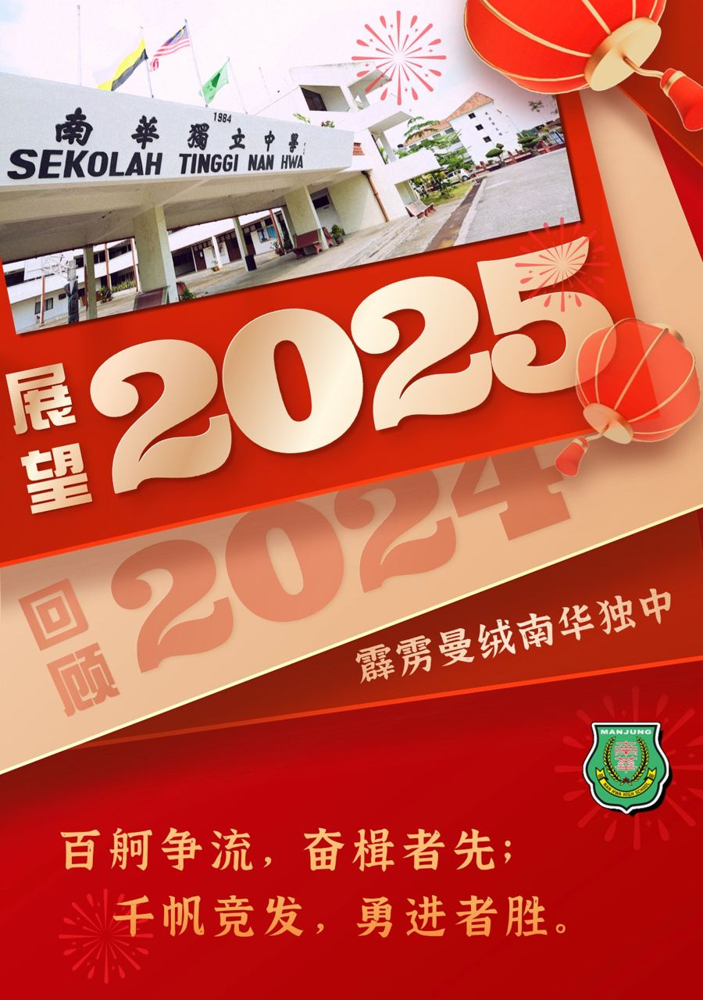

《2025年新年感言》
《2025年新年感言》
——南华独中校长陈丽冰博士
“百舸争流，奋楫者先；千帆竞发，勇进者胜。” 这句格言生动诠释了南华独中“迎领”新时代教育潮流、勇攀高峰的精神风貌。站在新年的起点，我们回顾过去，展望未来。秉持 “学会读书·学会做人” 的办学方针，以 “培养‘迎领’21世纪中华文化素养领袖人才” 为愿景，坚定迈向教育卓越的航程。
【回顾2024】坚定初心，砥砺奋进
1. 教育创新与科技引领
2024年，迈入教改1.0第三年。翻新的科技楼正式启用，为学生提供现代化、跨学科的学习空间与实践平台。课程涵盖STEAM项目和实训课程，助力学生在创新实践中锤炼跨领域的综合能力，培育适应未来的高素质人才。
于2023年加入“跨阅3.0的校本跨科课程 “棕榈·从乡土认知走向国际教育”。课程以棕榈产业为主题，结合科学、地理、商业、人文等学科，通过实地调研、实验研究和产品开发等方式，帮助学生从乡土资源出发，掌握跨领域知识与技能。2024“跨阅4.0”课程项目中，学生们成功自产自销，成功研发以棕榈油为原材料的香皂与护手霜，展示了从“种子到产品”的全流程创新成果，真正落实将专业知识应用于解决日常生活难题的能力培养上。
2. 文化传承与德育融合
通过艺术创作、历史歌舞剧以及文艺大汇演、为曼绒实兆远垦场博物馆以福州先辈南来开垦的历史背景为主题的跨界演出。
廿四节令鼓也以同样的历史故事融入主题为《Mari-mari Sitiawan》的鼓艺中，在中国福建福清市“侨青故乡行”活动中震撼演出。用鼓声和鼓艺完美替代语言讲述了先辈从福州南来马来西亚实兆远开垦的真实故事。展示了马来西亚华人对中华文化的坚守与传承，获得当地师生的高度评价。这场别开生面的文化交流，不仅深化了师生对祖籍文化的认同，还为南华搭建了中马文化共鸣的桥梁。
12月承办了由陈嘉庚基金会赞助、霹雳董联会主办的“全霹雳中学华文学会干部训练营”活动内容紧扣华文教育、中华文化以及领导素养贯穿于游戏中，将领袖素养与文化教育进行了有机融合，展现出热爱与传承的使命感，践行“各美其美，美人之美”的精神内核。
3. 赛事荣誉与素养提升
无论是国内外或校内外，学术、艺术、美育及运动竞技类比赛或课外活动，南华学子一次次展现风采，屡创佳绩。校园开放日的各种学习成果展或初次的摄影与美术展，都完美展示了南华学子以实际行动诠释了“心有多大，舞台就有多大”拼搏与追求卓越的人生态度，践行了“学会读书·学会做人”育人理念。
4. 社区共建与资源共享
与各大教育学府签署姐妹校与合作协议，共推建教合作；“机器人课堂”项目惠及多所社区小学，实现了优质教育资源共享的理念。将“美美与共，天下大同”的教育情怀具体落实到实践中，注入了教育新动力。
【展望2025】同心同行，共创未来
新的一年，教改2.0正式推展。我们将继续秉持“培养‘迎领’21世纪中华文化素养领袖人才” 愿景与“ 学会读书·学会做人”的初衷，推动教育创新与融合，深化校本课程改革，提升学生的人文素养和国际视野。我们将在以下三大领域奋力前行：
1. 教育创新与未来融合
探索人工智能、绿色能源等新兴领域的教育项目，加强课程数字化建设，进行跨学科、跨领域选科，全面提升学生面向未来挑战的适应力和竞争力。
2. 文化涵养与品格教育
持续举办“中华人文”“领袖核心素养”等系列活动，将中华文化与德育教育深植校园，帮助学生学会在多元文化中保持自信与谦逊，成为品德高尚、学识渊博的未来领袖。
3. 社区连结与合作共赢
庆祝创校90周年之际，我们将继续加强校友网络建设，携手社区，搭建更紧密的合作桥梁，通过义跑、教育展等形式，回馈社会，深化“美美与共”的理念，推动跨群体、跨领域的多元交流与共享。
【感恩同行，共筑辉煌】
每一次进步与突破，都凝聚着每一位南华人的辛勤付出与无私奉献。感谢全体教师、学生、校友及家长的信任与支持；感谢社会各界给予的支持与肯定。
“聚是一团火，散是满天星。”让我们继续携手同行，在新的一年里以梦想点燃希望，以奋斗成就未来，共同书写南华独中更加璀璨的篇章！
祝愿大家新年快乐，身体健康，万事如意！
